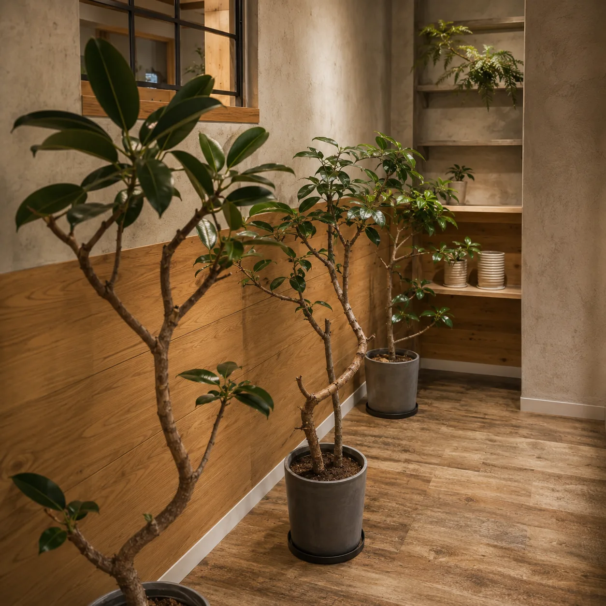

ゴムの木の育て方｜葉が落ちる原因と置き場所のコツ

ゴムの木を迎えたのに、葉がぽろぽろ落ちて不安になっていませんか。この記事では、ゴムの木の置き場所と季節ごとの水やり、葉が落ちるときの原因の見分け方を、熊本の冬の冷え込みもふまえてまとめました。
ゴムの木はどんな植物？初心者向きと言われる理由
ゴムの木は、フィカスと呼ばれるイチジクの仲間の観葉植物です。よく見かけるのはインドゴムノキと、その園芸品種のデコラ（濃い緑の葉）やティネケ（斑入りの葉）など。同じフィカスの仲間では、ベンガレンシスやウンベラータも「ゴムの木」として並ぶことがあります。厚みのあるつやつやした葉が特徴で、一鉢あるだけで部屋の印象がぐっと引き締まります。
初心者向きと言われるのは、多少の水やり忘れや、明るさの不足にもある程度耐えてくれる丈夫さがあるからです。一方で、暖かく明るい場所ではぐんぐん大きくなるので、置き場所の広さには少し余裕を見ておくと後で困りません。
ただし「丈夫」と「放っておいていい」は別です。ゴムの木は、環境が急に変わったときや、冷えと水のあげすぎが重なったときに、葉を落として知らせてくることがあります。育て方のコツは、その合図を読み取れるようにしておくことです。
置き場所はどこがいい？日当たりと避けたい場所
置き場所の目安は、レースカーテン越しにやわらかい光が入る窓辺です。日陰でもすぐに枯れることはありませんが、暗い場所に長く置くと、茎が細く伸びて葉と葉の間隔が広がり、葉も落ちやすくなります。
- いちばんのおすすめ：レースカーテン越しの窓辺
- 次の候補：窓から1〜2mほどの、日中は照明なしで本が読めるくらい明るい場所
- 明るい窓辺がない部屋：日中も暗いなら、植物用のライトで光を足すか、明るさのある別の部屋を選ぶ
反対に、避けたい場所もあります。
- エアコンや暖房の風が直接当たる場所（葉が乾いて傷みやすい）
- 夏の西日が強く差し込む窓辺（葉焼けしやすい）
- 冬の夜に冷え込む窓ガラスのすぐそば
「動かさない」が基本ですが、冬の夜だけ窓から少し離すような小さな移動は、冷えから守るための別の話です。避けたいのは、明るさや温度が大きく違う場所へ何度も移し替えることです。
室内で育っていた株を、いきなり屋外の直射日光に出すのも避けてください。慣れていない葉は白っぽく焼けてしまい、焼けた部分は元に戻りません。

水やりの頻度は？季節ごとの目安
水やりは「何日に1回」と決めるより、土の乾き具合を見て決めるのが失敗しないコツです。同じ鉢でも、置き場所や鉢の大きさ、季節によって乾くまでの時間がまったく違うからです。
- 土の表面を指で触り、乾いているか確かめる（指を第一関節まで入れて、中が湿っていればまだ待つ）
- 乾いていたら、鉢底から水が流れ出るまでたっぷり与える
- 受け皿にたまった水は、そのままにせず捨てる
水をあげた直後と、乾いたときの鉢を持ち比べておくと、重さでも乾き具合が分かるようになります。
- 春〜秋（よく育つ時期）：土の表面が乾いたらたっぷり。真夏は乾きが早いので、こまめに土を確かめる
- 冬（ゆっくり休む時期）：表面が乾いたあと、さらに2〜3日ほど置くのが目安
冬に減らすのは、1回の量ではなく回数です。あげるときは鉢底から流れるまで与え、次までの間をあけます。少しずつ毎日あげると、鉢の中がいつも湿ったままになりやすいからです。
屋外や日差しの強い窓辺に置いた鉢は、夏の昼間に鉢の中が蒸れて根を傷めることがあります。熊本の夏は気温も湿度も高いので、こうした場所では朝か夕方以降に水やりをするのがおすすめです。
葉にホコリがたまると、光を受けにくくなります。ときどき霧吹きで葉に水をかけたり、水でしぼったやわらかい布でふいたりしておくと、乾燥を好む小さな虫の予防にもなります。冬は部屋が暖まった日中に行ってください。
葉が落ちるのはなぜ？原因の見分け方と対処
ゴムの木は、買って帰った直後や、季節の変わり目に葉を落とすことがあります。葉が落ちたら、まず土と葉の様子を見て、原因をしぼり込みます。
- 土がずっと湿っていて、葉が黄色くなって落ちる：水のあげすぎの疑い。水やりを止めて土を乾かす
- 土がカラカラで、葉がしおれてから落ちる：水切れ。鉢底から流れるまでたっぷり与える
- 寒い日のあとに、緑のままの葉が何枚も落ちた：冷え。窓から離し、暖かい場所に落ち着かせる
- 下の古い葉から少しずつ落ち、茎が細く伸びている：日照不足。もっと明るい場所へ
- 置き場所を変えた直後に落ちた：環境の変化。明るい場所に落ち着かせて、しばらく動かさない
いちばん下の古い葉が、ときどき1枚黄色くなって落ちる程度なら、株が育つなかで起きる自然な入れ替わりのこともあります。上の新しい葉が元気で、落葉が続かないなら、慌てて置き場所を変えたり肥料を足したりせず様子を見てください。
注意したいのは、土が乾かないまま葉がしおれる、茎の根元がやわらかい、土からいやなにおいがする、といったときです。根腐れが進んでいる心配があるので、鉢から抜いて根を確かめます。黒くやわらかくなった根は取り除き、新しい土に植え替えるのがひとつの方法です。寒い時期は植え替えの負担も大きいので、迷ったら傷んだ根や株を持って、植物を扱うお店に相談するのも手です。
冬はどう越す？熊本の冷え込みに合わせた管理
ゴムの木は寒さが得意ではありません。目安としては、5℃を下回ると傷みやすく、10℃以上あると冬を越しやすいと言われます。この温度は外の気温ではなく、植物を置いている場所の、いちばん冷える明け方の温度で考えるのがポイントです。
熊本は冬でも日中は晴れて暖かい日が多い一方、よく晴れた日の明け方はぐっと冷え込みます。昼は日が当たって暖かい窓辺も、夜から明け方にかけては部屋の中でいちばん冷える場所になりがちです。
- 鉢のそばに温度計を置き、明け方の温度を何日か見てみる
- 10℃を下回る日が続くなら、夜だけ窓から離して部屋の中ほどへ
- 5℃近くまで下がる部屋なら、冬のあいだは暖かい別の部屋に置く
あわせて、暖房の風が直接当たらない位置にし、水やりは控えめに、肥料は春まで休みます。熊本では、最低気温が下がり始める10月中旬から11月ごろが冬支度の目安です。冬の観葉植物全般の考え方は冬の観葉植物の管理にもまとめています。
剪定・植え替え・肥料はいつ？
剪定
枝が伸びすぎたときや、形を整えたいときに剪定します。時期は、暖かく新しい葉がよく出る春から初夏ごろが向いています。真夏と冬は株が弱りやすいので避けましょう。切るときは、葉や芽がついている節（葉のつけ根）の少し上で切ると、そこから新しい芽が出やすくなります。
切り口からは白い樹液が出ます。肌がかぶれることがあるので、手袋をして作業し、手についたら水で洗い流してください。床や家具に垂れると落ちにくいので、新聞紙を敷いておきます。
植え替え
1〜2年ほどたって、鉢底から根が出てきた、水がしみこみにくくなったと感じたら、植え替えのタイミングです。新しい葉が動き出し、室温が安定して20℃前後ある時期（真夏を除く春〜初秋）に、今より一回り大きな鉢へ植え替えます。大きすぎる鉢は土が乾きにくく、根腐れの原因になるので「一回り」がポイントです。
植え替えの直後は、明るい日陰で休ませます。肥料は、新しい葉が出てきたのを確かめてから、目安として1か月ほどあけて再開します。
肥料
肥料は、よく育つ春から秋にかけて、ゆっくり効く置き肥か、薄めた液体肥料を与えます。量や濃さは製品の表示を必ず守ってください。冬は成長がゆっくりになるので与えません。元気がないときに肥料を足すと、かえって根を傷めることがあります。
まとめ
ゴムの木は、置き場所と水やりのコツさえつかめば、長く付き合える丈夫な観葉植物です。
- 置き場所は、明るく、風が直接当たらない場所に決めて、ころころ変えない
- 水やりは土の乾き具合を見て。冬は量でなく回数を減らす
- 葉が落ちたら、土の湿り具合と、置き場所・気温の変化をまず確かめる
- 熊本の冬は、明け方の窓辺の冷え込みに気をつける
部屋に合う鉢カバー選びは鉢カバーの選び方で紹介しています。品ぞろえは時期によって変わるので、在庫の確認や育て方のご相談は、LINEからお気軽にお問い合わせください。
よくある質問
- 落ちた葉と同じところから、また葉は出てきますか？
- 一度葉が落ちた節から、同じように葉が生え直すことはあまりありません。新しい葉は、主に枝の先や、剪定した切り口の近くの芽から出てきます。下の葉が落ちて見た目が寂しくなったときは、暖かい時期に剪定して、脇から芽を出させる方法があります。
- ゴムの木の葉に白い点や、べたつきが出てきました。
- 葉の裏や茎に小さな虫がついていないか確かめてください。ハダニやカイガラムシがつくと、葉に白っぽいかすれや、べたつきが出ることがあります。見つけたら布でふき取るか水で洗い流し、数が多いときは観葉植物用の薬剤を使います。
- 葉のつやを出すのに、市販の葉面保護剤を使ってもいいですか？
- 使うことはできますが、普段のお手入れは水でしぼった布でふくだけで十分です。使う場合は観葉植物用と書かれたものを選び、新しく出たやわらかい葉には使わないようにします。
- 切った枝で増やすことはできますか？
- 暖かい時期なら、剪定した枝で挿し木ができます。切り口の樹液を水で洗い流し、葉を1〜2枚に減らしてから、清潔な用土や水苔に挿して明るい日陰で管理します。根が出るかは時期や枝の状態にもよるので、何本か試してみるのがおすすめです。
HYGGE（ヒュッゲ）のお店
観葉植物と北欧雑貨のお店です。実物を見て選びたい方は、お気軽にお立ち寄りください。
熊本市南区幸田1丁目7-15／11:00〜17:00（水・土定休）／駐車スペースあり